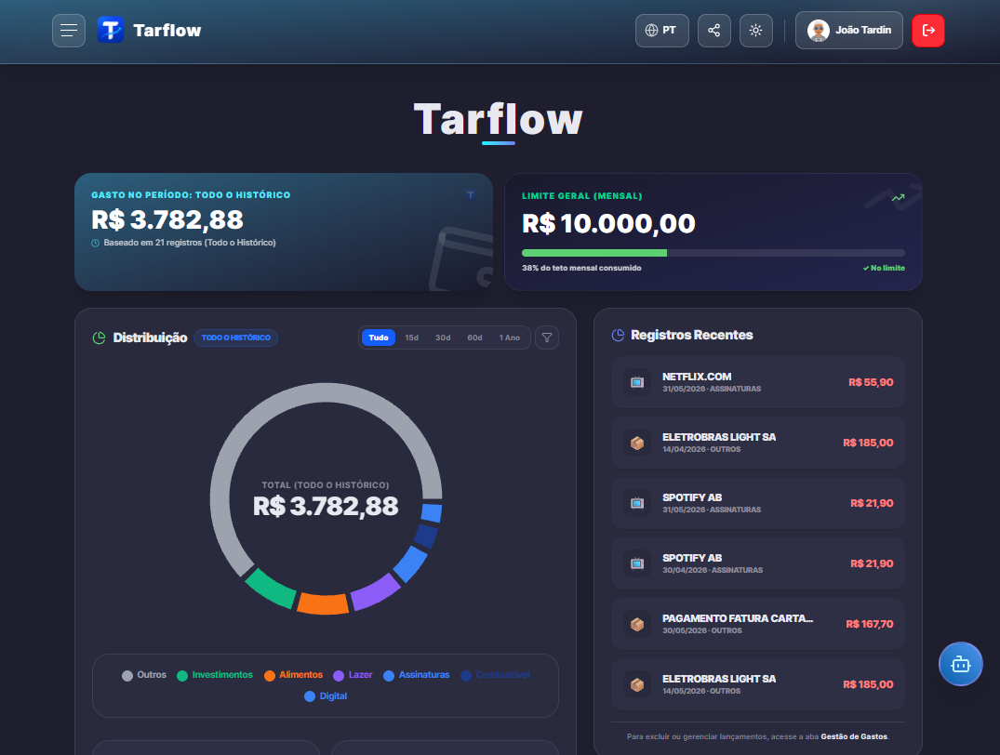
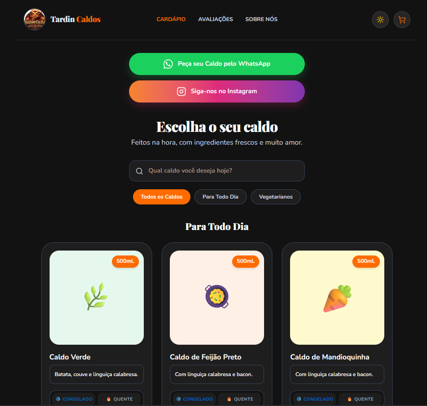

Marketing Technology & IA Builder em São Paulo, Brasil
Um pouco da minha trajetória
Atualmente atuo como Analista de Suporte Jr. no Grupo Dreamers, com experiência em suporte técnico, infraestrutura e otimização de processos corporativos. Tenho interesse em Marketing Digital, UX e tecnologia aplicada à experiência do usuário, e busco sempre unir essas frentes com criatividade, análise e inovação no desenvolvimento de projetos e soluções digitais.
Faço parte do Projeto Aurora, migração do ecossistema Microsoft para o Google Workspace Enterprise, conduzindo a transição de mais de 800 colaboradores para as novas ferramentas.
Sou estudante de Marketing no Senac São Paulo e possuo certificações do Google em Foundations of Digital Marketing and E-commerce e Introduction to AI, além de formação complementar em Inteligência Artificial para Estudantes pelo LinkedIn Learning. Também utilizo ferramentas de IA generativa como Claude e Google Gemini para produtividade, automação e apoio estratégico em fluxos digitais, buscando oportunidades que conectem marketing, tecnologia e experiência digital.
Projetos
Projetos que nasceram de problemas reais — meus e de quem está por perto — construídos com apoio de IA generativa do zero ao ar.
Tarflow
Uma tentativa de transformar minha própria relação com dinheiro em produto.
Um dos meus primeiros projetos: mais do que um app web, foi uma tentativa real de organizar minhas próprias finanças e transformar esse aprendizado em produto, construído do zero com Google AI Studio e IA generativa. Descontinuado como produto, deu origem à identidade visual do Tardin Invest.
Tardin Invest
Projeto pessoal de educação financeira no YouTube e Instagram, com a série "Do Zero à Aposentadoria" acompanhando uma jornada de construção de patrimônio desde o básico. Nasceu depois que o Tarflow foi descontinuado, reaproveitando a identidade visual em navy, preto e ciano.
[Nome do Projeto 3]
[Descrição curta: o que é, qual problema resolve, seu papel nele.]
Serviços
Frentes onde posso ajudar diretamente, unindo marketing, produto e IA aplicada aos negócios.
Websites & Landing Pages

Não penso apenas em páginas. Penso na experiência que acontece entre o primeiro clique e a conversão.
Desenvolvimento de websites, landing pages e interfaces digitais com apoio de IA, unindo UX/UI, estratégia e tecnologia para criar experiências que comunicam, envolvem e geram ação.
- UX/UI e experiência do usuário
- Websites e landing pages orientados à conversão
- IA aplicada ao processo de criação
Experiência Digital & Conversão

Peguei um negócio familiar e transformei seu catálogo de caldos em uma experiência digital pensada para vender.
A ideia foi simplificar a escolha, apresentar os produtos de forma mais atrativa e reduzir o caminho entre conhecer o produto e fazer o pedido.
- Catálogo digital interativo
- Conversão direta pelo WhatsApp
- Interface pensada para facilitar a decisão
IA & Soluções Sob Medida
Desenvolvimento de agentes inteligentes, automações avançadas e um amplo leque de soluções pra resolver desafios específicos de cada projeto.
- Agentes Personalizados & IA Aplicada
- Soluções Digitais sob Medida
Skills
Aberto a novas oportunidades
Buscando posições em Marketing Digital, MarTech, UX/UI ou projetos que envolvam IA generativa aplicada a produto. Entre em contato!